polyfit¶
| Title: | Polynomial Regresssion with Ridge Regression. |
|---|
@author: Bhishan Poudel
@date: Sep 22, 2017
@email: bhishanpdl@gmail.com
The cost function for the Ridge Regression is given by
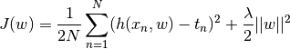
Here, the first term is the half mean of the SSE.
And the second term is the shrinkage penalty.
The parameter  is called shrinkage hyperparamter.
Since it is the hyperparamter we chose it from the validation set,
not from the train set.
is called shrinkage hyperparamter.
Since it is the hyperparamter we chose it from the validation set,
not from the train set.
The term 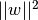 is the L-2 regularizaton on the SSE term. The square form is called Ridge Regression and the modulus form 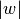 is called Lasso Regresssion.
If we have both Lasso and Ridge regression it is called Elastic Net Regression. Elastic Net Regression have the parameters: 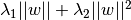
If a group of predictors are highly correlated among themselves, LASSO tends to pick only one of them and shrink the other to exact zero (or, very near to zero). Lasso can not do grouped selection and tends to choose only one variable. It is good for eliminating trivial features but not good for grouped selection. Lasso gives the sparse model and is computationally less expensive.
On the other hand, Ridge Regression penalize the term on the squares of the magnitude. The weight are drawn near to zero but not exactly zero. This method is computationally inefficient.
-
polyfit.comparison(fh_train, fh_test, fh_valid, lam_min_rmse_valid, M)[source]¶ Compare the unregularized and regularized polynomial regression.
Here, we compare test RMSE with and without ridge regularization for 9th degree univariate polynomial regression.
While fitting test data with ridge regression, we use the hyper parameter lambda that gives the minimum rmse in the cross-validation set.
Parameters: - fh_train (str) – File path for train data
- fh_test (str) – File path for test data
- fh_valid (str) – File path for validation data
- lam_min_rmse_valid (float) – The hyperparameter lambda that gives minimum
- on cross validation set. (rmse) –
Return: None
-
polyfit.compute_rmse(X, t, w)[source]¶ Compute the RMSE.
RMSE is the root mean square error.
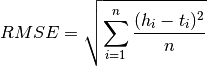
Here the hypothesis h is the matrix product of X and w. Hypothesis h should have the same dimension as target vector t.
The norm of 1d vector can be calculated as given in Wikipedia Norm.
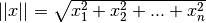
There are several methods to calculate hypothesis and norms.
Python codes to calculate norm of a 1d vector:
import numpy as np from numpy.core.umath_tests import inner1d V = np.random.random_sample((10**6,3,)) # 1 million vectors A = np.sqrt(np.einsum('...i,...i', V, V)) B = np.linalg.norm(V,axis=1) C = np.sqrt((V ** 2).sum(-1)) D = np.sqrt((V*V).sum(axis=1)) E = np.sqrt(inner1d(V,V)) print [np.allclose(E,x) for x in [A,B,C,D]] # [True, True, True, True] import cProfile cProfile.run("np.sqrt(np.einsum('...i,...i', V, V))") # 3 function calls in 0.013 seconds cProfile.run('np.linalg.norm(V,axis=1)') # 9 function calls in 0.029 seconds cProfile.run('np.sqrt((V ** 2).sum(-1))') # 5 function calls in 0.028 seconds cProfile.run('np.sqrt((V*V).sum(axis=1))') # 5 function calls in 0.027 seconds cProfile.run('np.sqrt(inner1d(V,V))') # 2 function calls in 0.009 seconds. # np.eisensum can also be written as # np.sqrt(np.einsum('ij,ij->i',a,a)) # NOTE: # inner1d is ~3x faster than linalg.norm and a hair faster than einsum # For small data set ~1000 or less numpy is faster # a_norm = np.sqrt(a.dot(a)) is faster than np.sqrt(np.einsum('i,i', a, a))
We can calculate hypothesis as: 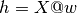
Or, we may use: 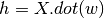
One of the fastest methods to calculate the hypothesis is the np.einsum method. The explanation of einsum is given below:
For example:
w X t 2,1 10,2 10,1 i,j k, i k,j h = np.einsum('ij,ki->kj', w, X) = X @ w
To find the norm of the residual matrix h-t we may use the code:
# Using np.linalg.norm ht_norm = np.linalg.norm(h - t) # inner1d is the faster than np.linalg.norm subroutine. from numpy.core.umath_tests import inner1d ht_norm = np.sqrt(inner1d(h-t,h-t))
To calculate RMSE we can also use sklearn library:
from sklearn.metrics import mean_squared_error rmse = mean_squared_error(h, t)**0.5
-
polyfit.fit_reg_poly(fh_train, fh_test, fh_valid)[source]¶ Regularized polynomial with fixed degree M = 9.
Here, ln lambda varies from -50 to 0 with step size 5. I.e. lamdda varies from exp(-50) to 1.
We have to calculate weight vector w for each lambda. For degree M = 9, weight vector w has 10 elements.
We also find RMSE for train and validation set for each lambda. Then we choose the hyperparameter lambda that gives the lowest RMSE on the validation set.
Parameters: - fh_train (str) – File path for train data
- fh_test (str) – File path for test data
- fh_valid (str) – File path for validation data
Returns: The value of hyper parameter lambda that minimizes RMSE for the validation set.
Return type: lam_min_rmse_valid (float)
-
polyfit.fit_unreg_poly(fh_train, fh_test, fh_valid, M)[source]¶ Unregularized polynomial regression for degree 0 to 9.
Here, the degree of the polynomial varies from 0-9.
Parameters: - fh_train (str) – File path for train data
- fh_test (str) – File path for test data
- fh_valid (str) – File path for validation data
Return: None
-
polyfit.read_data_vander(infile, M)[source]¶ Read the dataset and return vandermonde matrix Xvan for given degree M.
This function returns vandermonde matrix of 1d array X.
The vandermonde matrix will be of size len(X) * M.
But here final Xvan will have shape sample * (degree+1)
The first column of vandermonde matrix is all 1.
The last column will be M-1 nth power of second column, NOT Mth power.
The target t is of the size len(X)*1 i.e. N * 1 (N is sample size)
Parameters: - infile (str) – input dataset text file, whitespace separated
- M (int) – Degree of polynomial to fit
Note
Numpy vander function (Vandermonde Matrix). Refer Numpy vander.
Example:
x = np.arange(1,6) # x must be 1d array x = np.array([1,2,3,4,5]) xvan3 = np.vander(x, N=3,increasing=True) # shape of xvn is len(x) * degree # first column is all 1 and last power is excluded [[ 1 1 1] [ 1 2 4] [ 1 3 9] [ 1 4 16] [ 1 5 25]]
Note
Numpy array slicing:
data = np.arange(20).reshape((5,4)) col0 = data[:, [0] ] col0_1 = data[:, [0,1]] col0_1a = data[:, :2] not_col0 = data[:, 1:] not_last = data[:, :-1]
-
polyfit.train(X, t)[source]¶ Train the data and return the weights w.
This model uses OLS method to train the data without the penalty term.

Parameters: - X (array) – Design matrix of size (m+1, n). I.e. There are m features and one bias column in the matrix X.
- t (column) – target column vector
Note
Here the design matrix X should have one extra bias term.
Warning
The operator @ requires python >= 3.5
-
polyfit.train_regularized(Xm1, t, lam, M)[source]¶ Ridge Regularization (L2 normalization) with square penalty term.
The cost function for ridge regularization is
Minimizing cost function gives the weight vector w. Here
is the hyperparameter chosen from validation set
with lowest rmse for given values of degrees of polynomial. Different may
give the same minimum rmse and we choose one of them.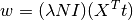
Parameters: - Xm1 (array) – Design matrix of size (m+1, n). I.e. There are m features and one bias column in the matrix X.
- t (column) – Target column vector. 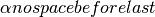
- lam (float) – The hyperparameter 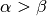 for the regularization.
- M (int) – Degree of the polynomial to fit.
Note
Here the design matrix X should have one extra bias term. The function read_data_vander returns X with one extra
Warning
The operator @ requires python >= 3.5